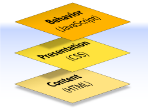

What Is CSS?
CSS is mainly used to beautify/style HTML tags/elements/content. CSS is main means of assiging as well as seperating styling-formating from HTML.
- CSS stands for Cascading Style Sheets
- Styles define how to display HTML elements
- Styles were added to HTML 4.0 to solve a problem
- External Style Sheets can save a lot of work
- External Style Sheets are stored in CSS files
Have you ever thought about what a web page is? I mean, what it really is?
When we examine the elements of its construction, a web document can consist of up to three layers—content, presentation, and behavior—as illustrated in below image ie Figure 1.

Figure 1. The three layers of a web document